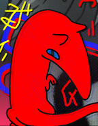

surfing the seven seas
fun/neat things
- Marginalia Search Engine
Anti-SEO search engine... an emphasis on the obscure.
- Your World of Text
an infinite grid of text editable by any visitor
- Goodbye Strangers
... creechurs...
- Mystery Flesh Pit National Park
exactly what it sounds like.
- This Fursona Does Not Exist
when AI trained on furry art was just funny.
friends
-
 yuril.net
A cool avali :3 their site inspired mine.
yuril.net
A cool avali :3 their site inspired mine.
other cool sites
- furscience.com
fandom research from a social psychology perspective
- yerfology
an anthropologist with interesting opinions on furry
 4lung.net
... puppy music.
4lung.net
... puppy music.heckscaper.com
HALLEY LABS / LAPFOX TRAX- violentmetaphors.com
intersecting pseudoscience, conspiracies, anthropology.
important...
-
 Sold a Story: How Teaching Kids to Read Went So Wrong
A disasterous disconnect between cognitive science and education, an ideological vacuum to be filled... A pedagogical train wreck narrated.
Sold a Story: How Teaching Kids to Read Went So Wrong
A disasterous disconnect between cognitive science and education, an ideological vacuum to be filled... A pedagogical train wreck narrated. -
 A Mathematician's Lament
How primary and secondary education has deprived math of its art and soul. This is just the 25-page pdf from 2002, which was expanded into a book by the same title in 2009.
A Mathematician's Lament
How primary and secondary education has deprived math of its art and soul. This is just the 25-page pdf from 2002, which was expanded into a book by the same title in 2009.
books!!!
math textbooks I wanna share
this is getting reworked, check back later :3
chill things i'm getting around to
- Ecology Without Nature: Rethinking Environmental Aesthetics
- Timothy Morton - Loving Nature: Towards an Ecology of Emotion
- Kay Milton - Mathematics - Form and Function
- Saunders Mac Lane - Where Mathematics Comes From: How the Embodied Mind Brings Mathematics Into Being
- George Lakoff, Rafael Nunez - Language at the Speed of Sight — How We Read, Why So Many Can't, and What Can Be Done About It
- Mark Seidenberg - Furscience: A Decade of Psychological Research on the Furry Fandom
- Courtney Plante, Stephen Reysen, Camielle Adams, Sharon Roberts, Kathleen C. Gerbasi
video essays I think a lot about
- On the Ethics of Boinking Animal People
- HACKENBUSH: a window to a new world of math
- The Incel to Trans Pipeline and Inside Mari
webcomics and adjacent
- active
- Post-Fable - Trigaroo
- Out of Placers - Valsalia
- Caelum Sky - ALRadeck
- Tamberlane - Caytlin Vilbrandt
- Oren's Forge - blackteagan
- Prequel - Kazerad and Ch'marr
- Lumine - Emma Krogell
- Savage Company - yitexity
- Twokinds - Tom Fischbach
- Fur Just Wanna Be Friend - theterm
- Tree of Life - Zummeng
- The Angel in the Forest - Yinller
- No North (Book 1) - Skailla
- A Tale of Tails - Feretta [NSFW]
- Rec Center - Tuke [NSFW]
- completed / on hiatus
- Housepets! - Rick Griffin
- Worm - Wildbow (web serial)
- Lackadaisy - Tracy J. Butler
- Welcome to New Dawn - Zummeng
- Space Vixen - Feretta
- No North (Book 0 [Shut Eye]) - Skailla
- Ghost Story - Hladilnik
- Edesk+Sisco - Lost and Found [NSFW]
- Haychel+slydragoon16 - Now and Forever [NSFW]
- Salvation - Trigaroo [NSFW]
- Trust Me - Grimart [NSFW]
- I Trusted You - Grimart [NSFW]
- Tell Me More - Grimart [NSFW]